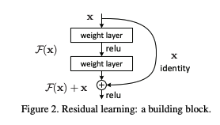

ResNet Summary
Contents
ResNet Summary#
Paper#
Deep Residual Learning for Image Recognition
Authors: Kaiming He, Xiangyu Zhang, Shaoqing Ren, Jian Sun (Microsoft Research)
ILSVRC 2015
Abstract#
“Deeper neural networks are more difficult to train. We present a residual learning framework to ease the training of networks that are substantially deeper than those used previously. We explicitly reformulate the layers as learning residual functions with reference to the layer inputs, instead of learning unreferenced functions. We provide comprehensive empirical evidence showing that these residual networks are easier to optimize, and can gain accuracy from considerably increased depth. On the ImageNet dataset we evaluate residual nets with a depth of up to 152 layers—8×deeper than VGG nets [41] but still having lower complexity. An ensemble of these residual nets achieves 3.57% error on the ImageNet test set. This result won the 1st place on the ILSVRC 2015 classification task. We also present analysis on CIFAR-10 with 100 and 1000 layers.
The depth of representations is of central importance for many visual recognition tasks. Solely due to our extremely deep representations, we obtain a 28% relative improvement on the COCO object detection dataset. Deep residual nets are foundations of our submissions to ILSVRC & COCO 2015 competitions, where we also won the 1st places on the tasks of ImageNet detection, ImageNet localization, COCO detection, and COCO segmentation.”
Summary#
Intro and Overview#
Prior to this paper, everyone tried making bigger networks
because accuracy on ImageNet increased with bigger networks
reached to the limit of making bigger networks
This paper was a revolution
after this residual connection became a norm
this is now used in
image recognition
transformers
The Problem with Depth#
the norm was if depth of NN is increased
it performs better
it generalizes better
reaches lower training loss
but optimizing it was hard
generally there would be drop in learning rate and would reach a lower level
but if on further increasing the depth,
training error would increase, both for training and test error
this was not a problem of overfitting,
as training error is not increasing after it came down with increase of iterations
VGG-Style Networks#
VGG nets were popular network earlier
An image would be input to convolutional layers
at first the layer will have a big resolution but with lower channel size
then image resolution would be downscaled, with an increase in number of filter
so more and more filters will be stacked, as resolution is down scaled
why?
in image classification
at lower level
edges are parsed
at higher level
NN learns more of abstract features
why?
at higher levels, the exact localization of these features will be less and less important
so if a car is present in the image,
its not that important where it is
for car
Residual Blocks#
The paper talks about having skip connections
Say there is a function \(H(x) := F(x) + x\)
so whatever we meed to change about x
or whatever we wnat the input to be changed to output
the weight layer tend towards the zero function
so if \(F(x)\) tends towards zero function, then \(H(x)\) becomes identity function
so the default function of this network is identity function
and what we learn is how to deviate from the identity function, which is a default function
at the bottom we see there is a relu function, which implies the total network is nonlinear function in total
but the default is the identity function
From VGG to ResNet#
if these networks are chained, we get a residual network
In VGG-19 network,
initially, image has 4 channels
upscale it to 64 channels and have resolution of 224
then use maxpools
which 1/2’s the resolution to 112, but up the filters to 128
then use maxpools again
which 1/2’s the resolution to 56, but up the filters to 256
this network has lot of parameters
needs lot of computation 19.6 billion FLOPs(floating point operations) for a forward pass
In residual network,
the network has lot less parameters/complexity compared to VGG
3.6 billion FLOPs
it is still much deeper
trade-off
not that many parameters are needed
succession of layers makes it learn lot more than having massive layers
ResNets have much less amount of filters 64 compared to 256
they also make a 34 layer network called plain
with no pooling, but use stride to convolution(instead of maxpool or average pooling) to downscale
The paper first compares VGG19 to 34 layer plain
we see that we loose performance, when the number of layers are increased
then it compares it to 34 layer plain to residual network
no extra parameters are introduced here, the only difference
is it has the jumping/skip connections
the signal can travel as the identity function
the network becomes trainable
and deeper network better network
caveat is
output has to be of the same size as input
as input needs to be added onto the output
for example here the output is half the size of input, but the number of filter size is double
it projects 64 filters to 128 filters
Experimental Results#
On left hand side figure,
18 layer network has lower train and validation accuracy
the solid line is the validation error of the center crops
the training error will be higher, as they do different augmentation
the training and validation error is higher in the deeper network(34 layer), if residual connection is not used
this is not due to overfitting
this is because the deeper network cannot be trained
the solution space of 18 layer is a subspace of solution space of 34 layer
we should be able to train equivalent to or lower than the accuracy of 18 layers
but we can’t
On right hand side figure, in the residual connection
trend is exactly reversed
34 layer has much better training and validation error than thee 18 layer
with 18 layers, the residual network error is marginally better in plain network
with 34 layers, the residual network error is lot better compared to plain network
residual connection help more and more, the deeper the network is
more importantly, residual networks don’t degrade the shallower network
the paper also compares the error with other networks
ResNet-34 A
zero padding of projection
ResNet-34 B
having projections simply between where channels don’t fit
gives a quite a bit of boost
ResNet-34 C
having projections in every single residual connection
does not give that much of a boost and introduces many more parameters
the paper also experiments deeper layer ResNets
among ResNet-50, ResNet-101, ResNet-152
ResNet-152 was the best one and also implied that more depth to have better network
they made an ensemble of different models and won 2015 ImageNet competition
Bottleneck Blocks#
the paper introduced bottleneck blocks
on left hand side image
for 64 dimension image,
it used 64 feature channels in convolution
and had 64 dimension output
on right hand side image
for 256 dimension image,
can save computation power, by projecting down to 64 first
as the complexity of “3x3, 64” layer will be the same as left hand network layer
and then project up again
1x1 convolution is significantly lower computational intensive than the 3x3 convolution
its 9 times less operation
Deeper ResNets#
this model is still used as pretrained version
used in segmentation applications